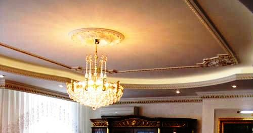

Качественный электромонтаж в Санкт-Петербурге и ленобласти, стаж 12 лет. Частный электрик, недорого и качественно.
Тел. 8 904 642 08 57 Николай.

Укладка тёплого пола в ванной.
Наверное, каждый сталкивался с неприятным ощущением, когда ночью, встав из теплой постели, становился на ледяной пол. Поэтому мы носим тапочки, теплые носки или что-то еще. Но, даже при горячих радиаторах не достичь того ощущения, которое дает теплый пол. Это и приятно, и экономно. Именно по этой причине, когда задумываемся о ремонте, не стоит забывать о тепле и комфорте который может дать теплый пол. Важно помнить, что технологии не стоят на месте, создать комфорт в доме легко и доступно. А удовольствие, оттого, что человек может в морозную январскую ночь, ходить босиком по голому полу трудно описать словами, это нужно попробовать самому.
Поэтому не будем сомневаться, будем делать теплый пол.
Он позволяет создавать в доме настоящий комфорт, без пересушенного воздуха в котором летает пыль под действием разогретых радиаторов. Если нагреть пол до температуры всего 30 градусов, то ноги у нас всегда будут в тепле. Немного выше температура будет 26 градусов, а на уровне головы будет 22 градуса.
Ну, разве это не комфорт?
Важно также помнить о преимуществе теплых полов над радиаторами. Разница в температуре между нагретым полом и воздухом в помещении, всего несколько градусов. А между радиаторами и температурой в комнате могут быть десятки градусов и то, лишь в случае хорошо утепленных стен и окон. Поэтому преимущества огромные и в комфорте, и в экономии.
Ну а если есть дети, то теплый пол просто необходим. В помещении не будет сквозняков, потому что, нет перепада температур на одном уровне, тепло равномерно поднимается вверх, окутывая все помещение. Дети могут, не боясь играть на голом полу и не замерзать, а, наоборот, при необходимости можно прогреваться от простуды.
Также теплый пол, это то, что не испортит красоту и дизайн помещения. Нет страшных радиаторов, особенно советских чугунных, которые занимали много места и их не знали, как прикрыть от глаз. А теплый пол невидим, так как спрятан под напольным покрытием.
Существует несколько разновидностей теплого пола, электрический и водяной. Какой пол выбрать, зависит от некоторых факторов, но главное, что преимущества бесспорные. Поэтому не стоит медлить, если планируется ремонт, важно подумать не только об изысканном интерьере, но и о комфорте, а теплый пол при этом, просто незаменим.


Замена электропроводки в панельном доме
Сколько будут стоить материалы.

Сколько стоит провести электричество в частный дом
Стоимость проводки электричества в квартире
.jpg)